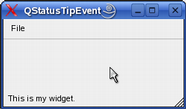
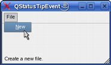

| Home · All Classes · Modules · QSS HELP · QSS 案例 · VER007 HOME |
该QStatusTipEvent类提供了用于显示在状态栏消息的事件。More...
继承QEvent。
该QStatusTipEvent类提供了用于显示在状态栏消息的事件。
状态提示可以在窗口小部件使用设置的QWidget.setStatusTip（）函数。它们显示在状态栏，当鼠标光标进入窗口小部件。例如：
MainWindow.MainWindow(QWidget *parent) : QMainWindow(parent) { QWidget *myWidget = new QWidget; myWidget->setStatusTip(tr("This is my widget.")); setCentralWidget(myWidget); ... } |
 |
状态提示也可以使用动作设置QAction.setStatusTip（ ）函数：
MainWindow.MainWindow(QWidget *parent) : QMainWindow(parent) { QMenu *fileMenu = menuBar()->addMenu(tr("File")); QAction *newAct = new QAction(tr("&New"), this); newAct->setStatusTip(tr("Create a new file.")); fileMenu->addAction(newAct); ... } |
 |
最后，状态提示通过支持的项目视图类的Qt.StatusTipRole枚举值。
构造一个状态提示事件与指定的文本tip。
See also tip（ ） 。
返回消息在状态栏中显示。
See also QStatusBar.showMessage（ ） 。
| PyQt 4.10.3 for X11 | Copyright © Riverbank Computing Ltd and Nokia 2012 | Qt 4.8.5 |